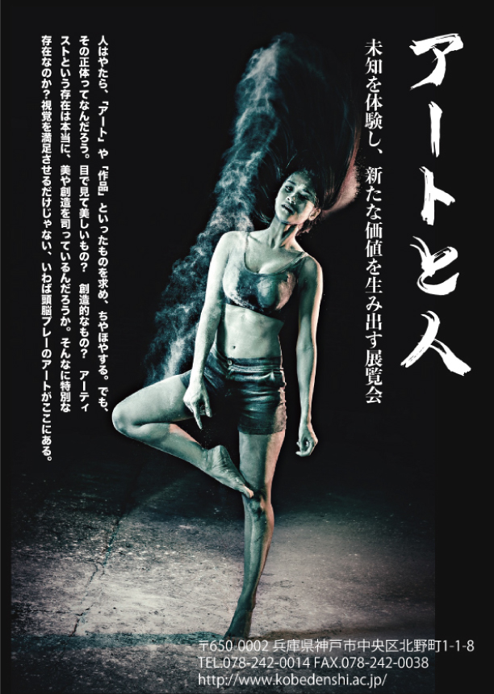
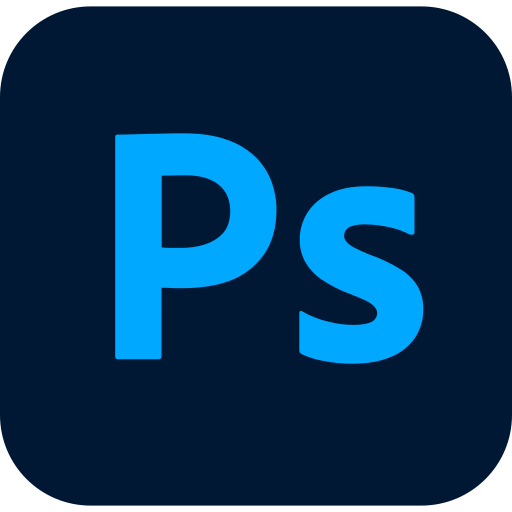

WORKS
作品の紹介

グラフィック
展示会フライヤー
- 課題内容
- タイポグラフィをテーマに、画像と文字を効果的に組み合わせたポスターを制作する課題です
- コンセプト
- アートの持つ独創性や自由な表現をテーマに、画像と文字を組み合わせ、展覧会の神秘的な世界観を表現する
- ターゲット
- ・ アートやデザインに興味がある人
・個性的な表現や芸術作品に関心がある人
- 制作期間
- 約2週間
- 使用ツール
-


- 工夫した点
- １. 人物写真を中央に大きく配置し、視線を集める構成にした。
２. タイトルは縦書きで大きく配置し、印象に残るデザインにした。
３. 文字の大きさや太さにメリハリをつけ、情報の優先順位を分かりやすくした。